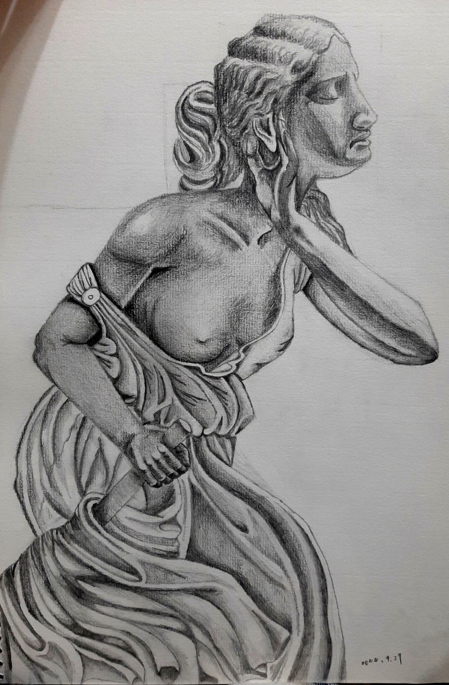
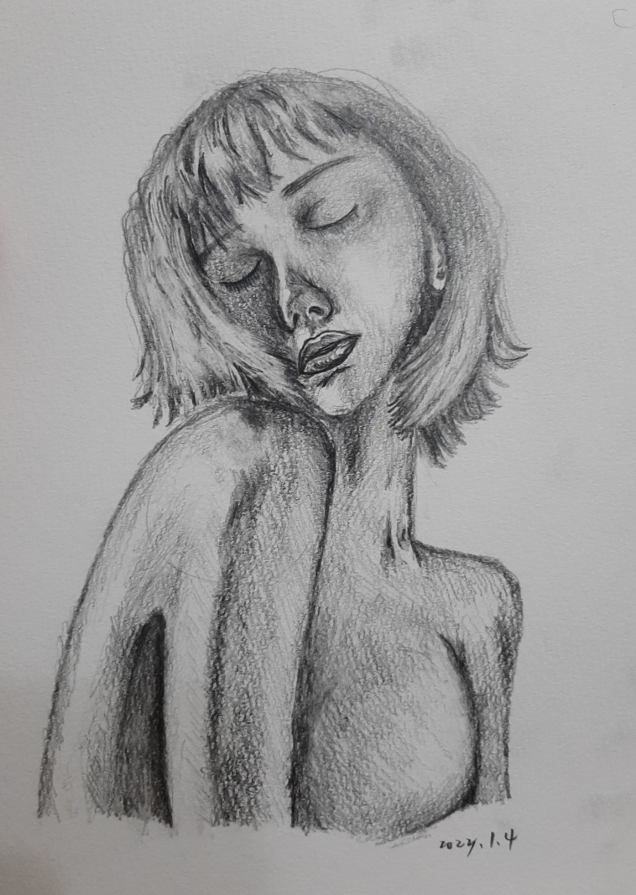
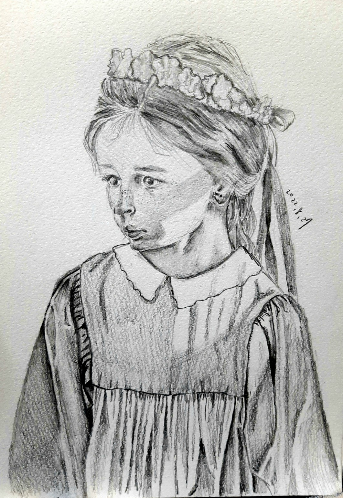
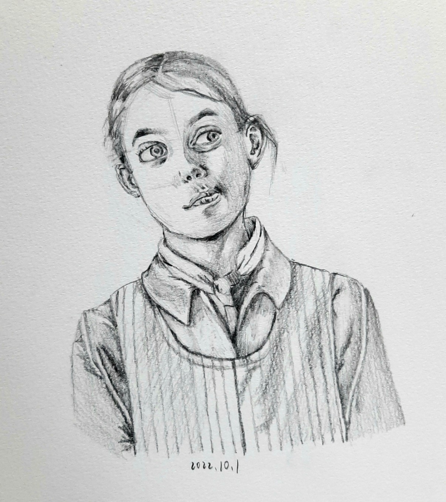
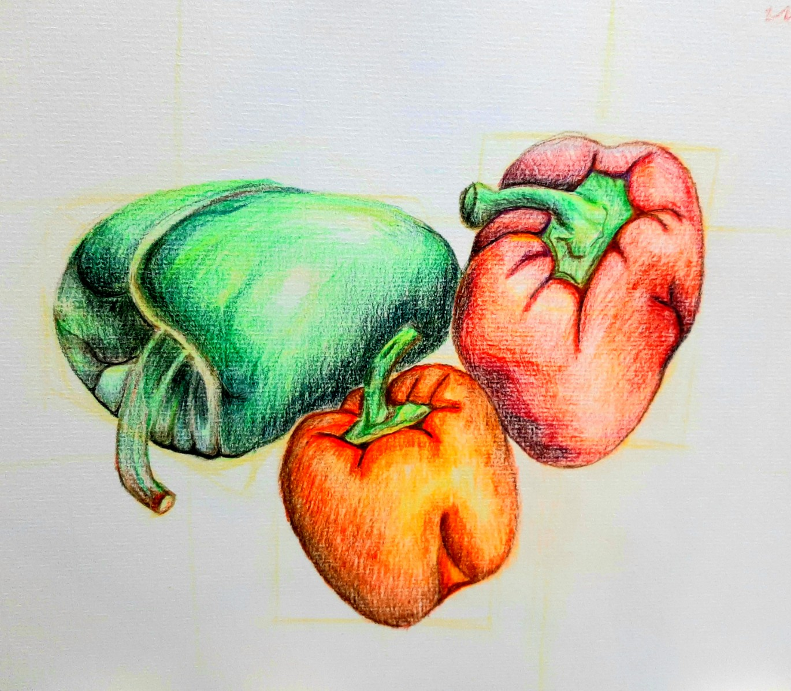
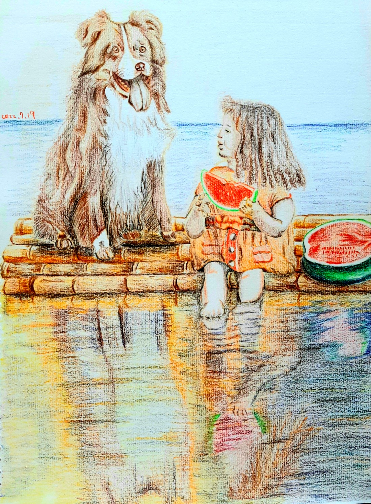

在素描裡發現自己｜Found myself in sketch
自從修過外系的素描學課程之後，便開啟了對於繪畫的新大陸，同時也發現了自己的小小天賦。
而畫畫的同時，我也更加地了解自己，看似安靜的作畫過程，實則隱藏無數的內心對話。
畫作介紹｜My Works
啟蒙畫 --- 龐貝城的盲女｜The Blind Flower Girl of Pompeii
期中自由創作的臨摹對象，我大膽選擇了石膏像。
因為這是真實展示的雕像，所以我只能找網路上別人拍攝的各種視角來了解它的結構。
雖然從沒有學過素描，但當時我沒有想太多，也單純只是喜歡這件藝術作品，才想說來畫畫看。
但就是因為她，才讓我發現，原來我也能做得不錯，即使遠遠還無法讓自己滿意，但她讓我看見自己的可能性。
女性素描｜The sketches of Women
在挑選素描臨摹照片時，我偏好畫女性，我也喜愛女性自然流露的情感，
無論是閉上眼的肢體動作，亦或是和動物相處時的神情，都令我相當著迷。
我還不太了解人體結構，所以目前大部分都是半身畫，這幅也是我少數有畫身體的作品。


色鉛筆素描｜The sketches of Colored Pencil
這幅青椒是我第一次完整的用色鉛筆練習素描，其實用色鉛筆練習素描是蠻理想的入門媒材，
比起使用素描用鉛筆。在陰影層次的部分，使用不同顏色去堆疊，呈現出來的效果比素描鉛筆更顯眼。
素描讓我知道如何更仔細地觀看物體，甚至平常的物體，我也能用不同的角度去看他們，因此變得不一樣。

聯絡我｜Contact me
這是我的連絡資訊
E-mail:thomas126148@gmail.com
歡迎寄給我任何想問的問題 或您的聯絡資訊: